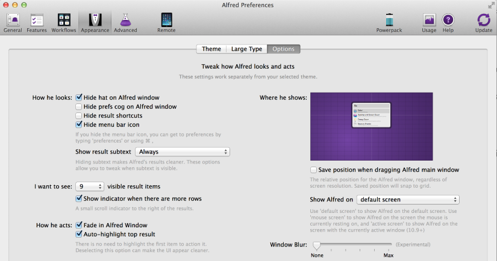

How to Become a Keyboard Ninja
Hello, I'm Una Kravets / @una
Why Work on Your Keyboard Mastery?
- Fast.
- Efficient.
- Looks Cool.
Workflow Tools for the Win
Spectacle

Download It.
Alfred App

Download This Too.
Customization
Alfred Dev Workflows
It's all (mostly) Free
Step 1: Package Control
Click Here to DownloadEmmet
- HTML
- CSS/Sass

Emmet is EVERYTHING!

AutoFileName
Link
Git Gutter
Color Highlighter
So Many More
Customizing Your User Settings
//increase carat size
"caret_extra_bottom": 2,
"caret_extra_top": 2,
"caret_extra_width": 2,
"caret_style": "solid",
"wide_caret": true,
// bracket highlighters
"match_brackets": true,
"match_brackets_angle": true,
"match_brackets_braces": true,
"match_brackets_content": true,
"match_brackets_square": true,
// modified tabs glow brighter
"highlight_modified_tabs": true,
// more space between lines
"line_padding_bottom": 1,
"line_padding_top": 1,
// bold folders
"bold_folder_labels": true,
// indentation highlight on active
"indent_guide_options": ["draw_normal", "draw_active"],
Vim!
Terminal Aliases
.zshrc or .bashrc
view: open ~/.zshrc
edit: vim ~/.zshrc
or create .aliases.sh
The "WTF" Alias
# restart terminal
alias wtf="source ~/.zshrc"
Absolute Links
# open these directories from anywhere
alias Dev="~/Desktop/Dev"
alias Blogs="~/Documents/Blogs"
Enter Directory when you Make It
function mkd() {
mkdir -p "$@" && cd "$@"
}
Make it Work for You!
Full Blog Post
# edit personal goals
alias pg-ed="subl ~/Desktop/Dev/personal-goals"
# check off personal goals (open main README.md in vim)
alias pg-ch="vim ~/Desktop/Dev/personal-goals/README.md"
# add to content list (opens content list folder in vim)
# i.e. pg-add blog-post or pd-add resource
function pg-add() {
if [ $# -eq 0 ]; then
print "Oops. Please enter a content type! (i.e. pg-add video)"
else
vim ~/Desktop/Dev/personal-goals/content-list/"$@"s.md
fi
}
# push my changes to my github master branch and open the page
alias pg-gh="cd ~/Desktop/Dev/personal-goals &&
git add -A &&
git commit -m 'push from terminal' &&
git push origin master &&
open http://github.com/una/personal-goals"

That's a lot of things
cmd.club